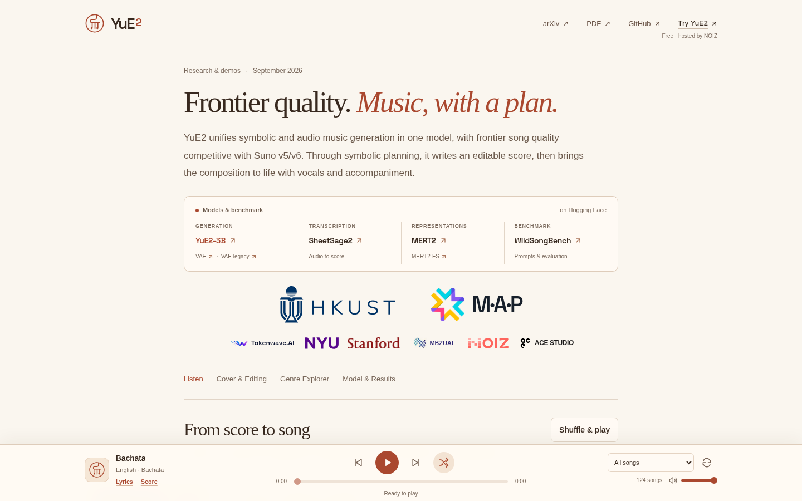
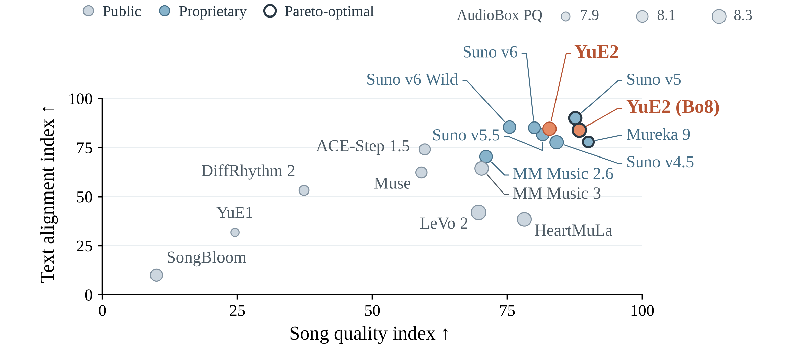
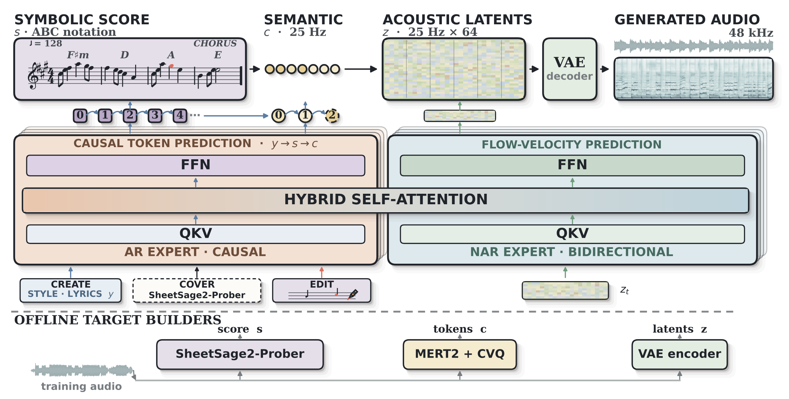
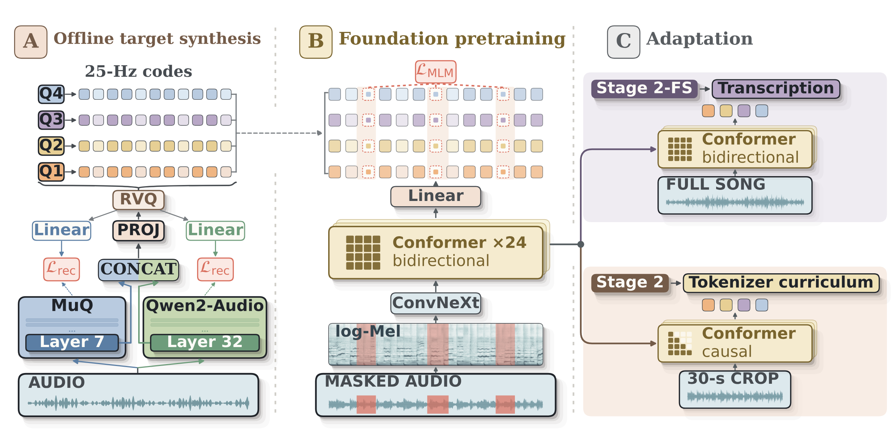
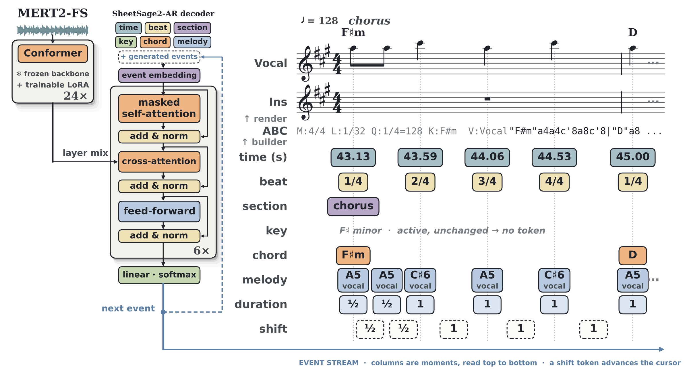

简介
前沿品质。音乐，有章可循（Music, with a plan）。
YuE2 把符号音乐生成和音频音乐生成合进了同一个模型，歌曲质量达到前沿水平，可以和 Suno v5/v6 一较高下。它靠符号规划工作：先写出一份可编辑的乐谱，再配上人声和伴奏，把这首作品唱奏出来。
Hugging Face 上发布的模型与基准：
- 生成：YuE2-3B，另有 VAE 和 VAE legacy
- 转谱：SheetSage2（音频 → 乐谱）
- 表征：MERT2、MERT2-FS
- 基准：WildSongBench（提示词与评测）
参与机构（按原页 logo）：HKUST、M·A·P、Tokenwave.AI、NYU、Stanford、MBZUAI、NOIZ、ACE STUDIO。原页另有 “Try YuE2” 入口，标注为免费、由 NOIZ 托管。
试听与演示（请前往原页）
原页有好几个交互区，都要在浏览器里打开原页才能用：
- 从乐谱到歌曲：先听一首歌，再看它的符号规划里写了哪些旋律、节奏与和弦。每首都能看生成的歌曲、符号乐谱（ABC 记谱，可复制）、歌词、风格提示词，还有交互式乐谱，播放时红色音符会跟着走。
- 翻唱与编辑：一首熟悉的歌也能换个模样。可以听旋律、歌词、速度和编曲各自改动后的效果。“智能体式音乐编辑”一节则演示了一首歌如何在一来一回的对话里慢慢成形。
- 曲风浏览：横跨多种曲风和语言的试听合集，可以筛选“带符号规划”和“直接生成”两种结果。
模型与结果
在 WildSongBench（192 条提示词）上，YuE2（best-of-8）的 SongBench 得分为 6.9632，是 17 个评测设置里最高的平均分。同一对比中 Suno v5 得 6.8721，Suno v6 和 Suno v6 Wild 分别得 6.5562 和 6.4195。

怎么读这些结果。WildSongBench 包含 192 条提示词、17 个系统设置，用的是论文里的 9 项自动指标。SongBench 是 7 个维度的平均，SongEval 是 5 个维度的平均。音乐性（Musicality）另外按评测器分开报告。两种 YuE2 设置都用了“旋律 + 和弦”的符号规划。
候选挑选。YuE2、公开基线、Suno v6 和 v6 Wild 都是每条提示生成 2 个候选，每个候选做 4 次 ASR，取 PER 更低的那个。较早的闭源结果沿用交付时的候选规则。YuE2 best-of-8 是从 8 次生成里挑：先比 SongBench 音乐性，再比 Q3O Control，最后比 PER。所以各家的挑选预算并不一样。榜单更新于 2026 年 9 月 12 日，排名会随指标变化。完整榜单在原页可以交互查看和下载。
模型架构：用符号作曲，用音频演奏

一份可编辑的乐谱依次变成语义音乐 token、声学隐变量，最后变成整首歌的音频。模型约有 3.58B 参数、28 层，能做创作、翻唱和编辑。AR（自回归）专家和 NAR（非自回归）专家共用一次注意力计算，但归一化、投影和 MLP 各用各的。
MERT2：学到声音背后的结构

MERT2 给分析和生成两边都提供音乐表征。它用 ConvNeXt 前端加 24 层 Conformer，预测被遮盖的码，这些码由 MuQ 和 Qwen2-Audio 两种互补特征构建。全曲适配版为 SheetSage2 提供音乐上下文；另一条因果分支做成了 YuE2 的 25 Hz 语义 tokenizer。
MARBLE 上的 SOTA：和列出的外部基线相比，MERT2-30s 在 15 项 MARBLE 指标里拿下 14 项 SOTA，MERT2-FS（全曲版）有 13 项超过这些基线。在 GiantSteps 调性 refined accuracy 上，MERT2-FS 得 67.05（×100）。
| 基准 / 指标 | 最佳已发表基线 | MERT2-30s | MERT2-FS |
|---|---|---|---|
| MTT 标签 ROC-AUC | 91.70 PupuJEPA-Large | 91.91 | 91.74 |
| MTT 标签 AP | 40.80 PupuJEPA-Large | 41.29 | 41.20 |
| GiantSteps 调性 refined acc. | 66.10 PupuJEPA-Large | 66.97 | 67.05 |
| GTZAN 曲风准确率 | 86.90 PupuJEPA-Large | 91.72 | 90.69 |
| GTZAN 节拍 F1 | 91.00 PupuJEPA-Large | 90.59 | 90.57 |
| EmoMusic 效价 R² | 62.50 PupuJEPA-Large | 63.23 | 63.52 |
| EmoMusic 唤醒度 R² | 78.50 PupuJEPA-Huge | 80.01 | 78.14 |
| MTG-Jamendo 乐器 ROC-AUC | 78.40 PupuJEPA-Large | 80.27 | 80.27 |
| MTG-Jamendo 乐器 AP | 21.20 PupuJEPA-Large | 22.89 | 23.51 |
| MTG-Jamendo 情绪/主题 ROC-AUC | 76.20 PupuJEPA-Large | 79.44 | 78.74 |
| MTG-Jamendo 情绪/主题 AP | 15.50 Dasheng-1.2B | 16.68 | 15.74 |
| MTG-Jamendo 曲风 ROC-AUC | 86.30 AudioMAE++ | 88.01 | 87.98 |
| MTG-Jamendo 曲风 AP | 20.10 PupuJEPA-Large / Huge | 21.22 | 20.66 |
| MTG-Jamendo Top 50 ROC-AUC | 83.10 AudioMAE++ / PupuJEPA-Huge | 84.18 | 84.13 |
| MTG-Jamendo Top 50 AP | 31.10 AudioMAE++ | 32.17 | 31.62 |
分数均 ×100，越高越好。每个 MERT2 编码器分别和该指标上 9 个外部基线里最强的那个比，两个 MERT2 不互相当基线。两个编码器都是 632M 参数。MERT2-30s 用 30 秒片段训练；MERT2-FS 在 30–360 秒的完整录音上继续预训练。这些基准测的是双向表征，不是因果 tokenizer。原页注明：PupuJEPA 在论文首发后已改名为 PupuM2D，表中沿用旧名。
SheetSage2：听一首歌，读出它的谱子

SheetSage2 能把一段录音转成可编辑的 lead sheet（主旋律谱）。它用 LoRA 适配过的全曲 MERT2-FS 编码器，接一个 6 层自回归解码器。任务提示决定要转写哪一项：节拍、段落、调性、和弦还是旋律。所有结果落在同一条事件时间线上，再转成 ABC 记谱，人声和器乐旋律各占一个声部。YuE2 的符号训练目标就是这些乐谱。
在展示的对比里，SheetSage2 在 15 项指标中拿下 12 项 SOTA。它只用一个自回归模型（SheetSage2-AR），就能做节拍、强拍、调性、和弦、结构和旋律六类转写。RWC-Pop 人声旋律音级 F1 为 82.51，osu2017 和弦 Maj/min 为 90.08（均 ×100）。
| 基准 | 任务 / 指标 | 最佳对比 | SheetSage2-AR |
|---|---|---|---|
| GTZAN | 节拍 F1 | 89.01 Beat This! | 86.27 |
| osu2017 | 节拍 F1 | 91.80 Madmom | 93.01 |
| GTZAN | 强拍 F1 | 78.28 Beat This! | 80.45 |
| osu2017 | 强拍 F1 | 85.90 Beat This! | 92.90 |
| GiantSteps | 调性 加权分 | 74.62 Madmom | 77.73 |
| GTZAN | 调性 加权分 | 74.43 S-KEY | 75.77 |
| osu2017 | 和弦 Maj/min | 86.55 ChordFormer | 90.08 |
| Chords1217 | 和弦 Maj/min | 83.94 ChordFormer | 83.81 |
| JAAH | 和弦 Maj/min | 59.45 ChordFormer | 64.50 |
| HarmonixSet | 结构 准确率 | 80.03 SongFormer | 80.51 |
| HarmonixSet | 结构边界 F1 · 0.5 s | 70.63 SongFormer | 67.96 |
| HarmonixSet | 结构边界 F1 · 3 s | 79.50 SongFormer | 82.86 |
| RWC-Pop | 人声旋律音级 F1 | 62.71 SheetSage1 | 82.51 |
| RWC-Pop | 完整旋律音级 F1 | 64.02 SheetSage1 | 75.29 |
| Rock Corpus | 人声旋律音级 F1 | 49.19 SheetSage1 | 67.08 |
SOTA 计数是和 SheetSage1、Madmom 以及各任务专用系统比出来的。SheetSage2-AR 是按验证损失选出的单个模型。Beat This! 的分数是三个公开训练种子的平均。旋律 F1 按音级算，起音容差 50 ms，不看结束点；结构 F1 按标注容差算段落边界。Chords1217 上，ChordFormer 每首曲子用一个留出折模型，其逐曲召回按参考时长加权，以对齐其他模型的计分方式；SheetSage1 和 SheetSage2-AR 都用同一个固定模型跑全部 1,217 首。Madmom 的和弦训练数据里含有 Chords1217。JAAH 用全部 113 首录音，参考标注与每段音频的时间范围取交集。Rock Corpus 是全部 200 首录音的平均，其中 6 首参考为空，按 0 分计。
训练数据
这些模型主要用 CC0 音乐和合成数据训练，大部分合成训练数据由 Tokenwave.AI 授权提供。团队表示会以合乎伦理、负责任的方式使用数据。各模型的训练数据量：MERT2 70 万小时，SheetSage2 2.84 万小时，YuE2 34.6 万小时。
引用
使用 YuE2、MERT2、SheetSage2 或 WildSongBench 时，请引用 arXiv 论文：
@article{yuan2026yue2,
title = {{YuE2}: Unifying Symbolic and Audio Music Generation at Frontier Quality},
author = {Yuan, Ruibin and Pan, Jiahao and Jiang, Junyan and Wu, Zhiyue and Zhou, Ziya and Sun, Jiankai and Li, Yizhi and Zhang, Ge and Gu, Yicheng and Tian, Zeyue and Dai, Junyu and Lin, Hanfeng and Li, Kai and Wu, Shangda and Liu, Xuanjie and Wang, Jiaming and Liu, Zihan and Wang, Yue and Ma, Yinghao and Yin, Hanzhi and Chen, Kangrui and Zhang, Xinyue and Ma, Ziyang and Liao, Mengqi and Zhao, Hejia and Huang, Guowei and Yan, Chao and Ke, Lei and Yu, Jianwei and Liu, Bei and Guo, Joe and Xue, Liumeng and Xia, Gus and Xue, Wei and Guo, Yike},
journal = {arXiv preprint arXiv:2609.33757},
year = {2026},
url = {https://arxiv.org/abs/2609.33757}
}